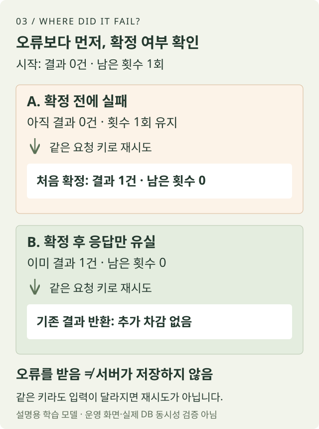

FIELD NOTE 03 · INTERVIEWER LENS
AI가 답한 뒤에 생기는 문제들
좋은 답변을 만드는 것만으로 서비스가 끝나지는 않았습니다. 응답이 끊기거나 같은 요청이 다시 들어왔을 때, 결과와 사용량을 어떻게 일치시킬지 점검한 기록입니다.
수정: · 저장 전 실패와 응답 유실을 직접 실행하는 학습 예제를 추가했습니다.
01 / WORK NOTES
결과와 사용량이 따로 움직일 수 있었습니다
Interviewer Lens는 개발자의 면접 답변을 AI로 진단하는 서비스입니다. 진단을 실행하면 답변을 만들고, 결과를 저장하고, 사용한 횟수도 기록해야 합니다. 눈에 보이는 답변 화면 뒤에 여러 단계가 이어집니다.
코드를 점검했을 때 사용량을 차감한 다음 결과를 따로 저장하는 흐름이 있었습니다. 중간에 실패하면 결과는 없는데 횟수만 줄어드는 상황이 생길 수 있는 구조였습니다. 이것은 점검에서 발견한 실패 가능성이지, 실제 사용자에게 같은 사고가 발생했다고 확인한 기록은 아닙니다.
수정의 기준은 결과 저장과 사용량 반영을 함께 확정하거나 함께 되돌리는 것이었습니다. 둘 중 하나만 성공한 상태를 남기지 않도록 만들고, 중간 저장 지점에 의도적으로 오류를 넣어 확인했습니다.
02 / WORK NOTES
응답이 없다는 것이 실패했다는 뜻은 아니었습니다
데이터베이스에서는 저장이 끝났지만, 브라우저로 돌아오는 응답만 끊길 수 있습니다. 이때 사용자가 다시 누른 요청을 전부 새 작업으로 처리하면 AI 실행과 사용량 기록이 중복될 수 있습니다.
그래서 같은 요청의 재시도인지 확인하고, 이미 확정된 결과가 있으면 그 기록을 다시 확인하는 경로를 연결했습니다. 완료된 결과를 뒤늦은 오류 때문에 실패로 덮어쓰지 않는지도 함께 점검했습니다. 접수 단계에서도 중복 요청이 새 AI 작업을 반복해서 시작하지 않도록 처리했습니다.
- 접수같은 작업을 다시 요청한 것인지 확인합니다.
- 확정결과 저장과 사용량 반영을 하나의 처리 단위로 묶습니다.
- 재확인응답이 끊겨도 이미 완료된 상태를 확인할 수 있게 합니다.
하나의 테스트만으로 충분하지는 않았습니다. 같은 요청이 동시에 들어오는 경우와 마지막 남은 사용 횟수를 여러 요청이 함께 쓰려는 경우도 별도로 검증했습니다.
03 / WORK NOTES
서버에서는 만료됐는데, 화면은 계속 기다렸습니다
마지막 화면 흐름 점검에서는 다른 빈틈을 발견했습니다. 서버가 작업 도중 종료되면 작업 예약은 만료돼도, 사용자의 화면은 계속 ‘처리 중’으로 남을 수 있었습니다. 내부 상태가 정리되는 것과 사용자에게 다음 행동이 보이는 것은 별개의 문제였습니다.
상태를 조회할 때 만료된 작업을 정리하고 다시 제출할 수 있도록 보완했습니다. 이후 재배포하고, 운영 화면에서 제출 버튼과 무료 한도, 최근 기록이 표시되는 흐름을 확인했습니다.
끝나지 않는 로딩 대신, 지금 어떤 상태인지와 다시 시도할 수 있는지를 알려주는 것까지가 서비스의 처리 흐름입니다.
04 / WORK NOTES
코드 준비와 운영 적용을 다른 칸에 적었습니다
작업은 DB 처리 기반을 먼저 만들고, 이를 서비스 흐름에 연결한 뒤 운영에 적용하는 순서로 진행했습니다. 앞 단계가 끝났을 때는 준비된 코드를 운영 적용 완료라고 기록하지 않았습니다.
검증도 층을 나눴습니다. 중간 실패 시 되돌아오는지 확인하는 테스트, 실제 데이터베이스 연결 간 동시성 테스트, 서버 요청 흐름과 운영 화면 확인을 구분했습니다. 검증용 입력은 합성 데이터로 준비하고 기존 사용자 기록을 보존하는 조건을 확인했습니다.
조회한 완료 기록에는 안정화 적용과 검증이 남아 있습니다. 다만 이 작업으로 모든 장애를 없앴다고 말할 수는 없습니다. 이 글은 운영 환경의 구성값이나 사용자 답변을 공개하지 않으며, 현재 보안 상태 전체를 인증하는 문서도 아닙니다.
05 / REPRODUCE THE DECISION
같은 요청을 다시 보냈을 때 무엇을 확인할까
아래 표는 작업 기록의 검증 기준을 독자가 자신의 서비스에 적용할 수 있게 다시 쓴 공개용 예시입니다. 내부 테스트 코드나 실제 고객 사고 기록은 아닙니다. 합성 요청 ID req-42와 사용 가능 횟수 1회를 가정합니다.
| 조건 | 저장 결과 | 사용 횟수 | 화면 상태 |
|---|---|---|---|
| 결과 저장 중 오류 | 없음 | 1회 유지 | 재시도 가능 |
| 저장 성공, 응답만 유실 | req-42 결과 1건 | 0회 | 재조회로 결과 표시 |
| 같은 ID 동시 재시도 | req-42 결과 1건 | 0회 | 같은 결과 표시 |
| 다른 ID로 동시 요청 | 허용된 1건 | 음수 아님 | 초과 요청은 안내 |
| 예약 만료 | 완료 결과 없음 | 확정 차감 없음 | 대기 종료·재시도 안내 |
자신의 서비스에서 따라 할 때는 요청 식별자, 결과 저장, 사용량 반영을 한 행씩 기록해 보세요. 실패 주입 뒤에는 DB의 결과 수와 남은 횟수를 함께 조회하고, 화면에서 로딩이 끝나는지도 확인합니다. 위 표의 숫자는 설명을 위한 기대값이며 현재 서비스의 실제 이용 한도나 운영 결과를 뜻하지 않습니다.
06 / RUN THE EXPERIMENT
저장 전 실패와 응답 유실은
같은 재시도로 풀리지 않습니다

표만 읽으면 둘 다 “오류가 났으니 다시 실행”으로 보이기 쉽습니다. 아래 작은 프로그램은 확정 전과 확정 후에 각각 오류를 던져 결과 수와 남은 횟수가 어떻게 다른지 보여줍니다. 이 글을 위해 새로 만든 공개 학습 모델입니다. 실제 서비스 코드, AI 응답, 고객 데이터는 사용하지 않습니다.
준비물은 Node.js뿐입니다. 의존성 설치, API 키, DB 연결이 없습니다. 실행해도 네트워크 요청이나 파일 저장을 하지 않습니다. 내려받은 파일이 있는 폴더에서 다음 명령을 실행하면 검증을 통과한 줄이 순서대로 출력됩니다. Node.js가 설치돼 있지 않으면 아래 전체 코드와 출력 비교만으로도 상태 변화를 따라갈 수 있습니다.
node retry-lab.mjs전체 JavaScript 코드 보기 · 다운로드와 동일한 내용
// Learning model only: one process, in-memory state, no real AI/DB/payment calls.
import assert from "node:assert/strict";
function createLab() {
let state = { remaining: 1, results: new Map() };
function submit(requestId, answer, failure = "none") {
const prior = state.results.get(requestId);
if (prior) {
if (prior.answer !== answer) throw new Error("KEY_REUSED_WITH_DIFFERENT_INPUT");
return prior;
}
if (state.remaining < 1) throw new Error("LIMIT_REACHED");
const result = Object.freeze({ id: requestId, answer, feedback: "synthetic result" });
const next = { remaining: state.remaining - 1, results: new Map(state.results) };
next.results.set(requestId, result);
if (failure === "before-commit") throw new Error("SAVE_FAILED");
// One synchronous assignment models a commit; this is NOT a DB transaction.
state = next;
if (failure === "after-commit") throw new Error("RESPONSE_LOST");
return result;
}
const snapshot = () => ({ results: state.results.size, remaining: state.remaining });
return { submit, snapshot };
}
const before = createLab();
assert.throws(() => before.submit("req-42", "sample", "before-commit"), /SAVE_FAILED/);
assert.deepEqual(before.snapshot(), { results: 0, remaining: 1 });
console.log("before-commit: results=0 remaining=1");
before.submit("req-42", "sample");
assert.deepEqual(before.snapshot(), { results: 1, remaining: 0 });
console.log("retry-after-failure: results=1 remaining=0");
const after = createLab();
assert.throws(() => after.submit("req-42", "sample", "after-commit"), /RESPONSE_LOST/);
assert.deepEqual(after.snapshot(), { results: 1, remaining: 0 });
console.log("response-lost: results=1 remaining=0");
const original = after.submit("req-42", "sample");
assert.strictEqual(after.submit("req-42", "sample"), original);
assert.deepEqual(after.snapshot(), { results: 1, remaining: 0 });
console.log("same-key-retry: same-result remaining=0");
assert.throws(() => after.submit("req-42", "changed"), /KEY_REUSED_WITH_DIFFERENT_INPUT/);
assert.throws(() => after.submit("req-43", "sample"), /LIMIT_REACHED/);
assert.deepEqual(after.snapshot(), { results: 1, remaining: 0 });
console.log("changed-input: rejected; new-key: limit-reached");
before-commit: results=0 remaining=1
retry-after-failure: results=1 remaining=0
response-lost: results=1 remaining=0
same-key-retry: same-result remaining=0
changed-input: rejected; new-key: limit-reached첫 실험은 state = next 이전에 실패하므로 임시로 만든 결과와 차감 값이 확정되지 않습니다. 다시 실행하면 결과 한 건과 차감 한 번이 함께 남습니다. 두 번째 실험은 같은 대입문 이후에 실패합니다. 호출자는 오류를 받지만 이미 상태가 바뀌었으므로 재시도는 기존 결과를 돌려줘야 합니다.
한도 확인보다 기존 요청 조회를 먼저 하는 이유가 있습니다. 이미 성공한 사용자는 남은 횟수가 0이어도 자신의 완료 결과를 다시 받아야 합니다. 반대로 같은 키로 답변을 바꿔 보내는 것은 재시도가 아닙니다. 예제는 이를 거부하고, 새 키로 요청하면 새 작업으로 판단해 한도 검사를 적용합니다.
코드를 일부러 바꾸면 어떤 검사가 실패할까요?
- 한도 검사를 기존 결과 조회보다 앞으로 옮겨 보세요.응답이 유실된 뒤 같은 req-42를 다시 조회하는 줄에서 LIMIT_REACHED가 납니다. 이미 확정된 결과를 되찾을 수 없어진 회귀입니다.
- state = next를 저장 전 오류 검사 위로 옮겨 보세요.첫 실험의 results=0, remaining=1 검사가 실패합니다. 실패했다고 알려 놓고 이미 결과와 횟수를 바꾼 상태가 됩니다.
- 입력 비교 조건을 지워 보세요.changed 입력을 거부해야 하는 assert.throws 검사가 실패합니다. 같은 요청 키가 다른 작업에 재사용돼도 예전 결과를 돌려주는 문제가 드러납니다.
단일 프로세스의 동기 메모리 모델이라 재시작하면 상태가 사라집니다. 동시 요청, 다중 서버, 외부 AI 호출의 중복 비용, 실제 DB 트랜잭션·복구·예약 만료는 구현하지 않았습니다. 앞의 운영 작업 회고와 이 공개 예제의 검증 범위를 혼동하지 마세요.
내 서비스에 옮길 때 따로 정할 것
요청 키는 인증된 사용자와 작업 종류까지 포함해 범위를 정해야 다른 사용자의 결과를 돌려주지 않습니다. 확정 결과와 사용량은 실제 저장소의 원자적 처리로 묶고, 동시에 들어오는 같은 키는 고유 제약 등으로 조정해야 합니다. 결과가 아직 없는 처리 중 상태도 따로 필요합니다. 프런트엔드 버튼 비활성화만으로는 이 조건들을 보장하지 못합니다.
최소한 서로 다른 DB 연결에서 같은 키를 동시에 보내는 경우, 남은 한 번에 서로 다른 키 두 개가 경쟁하는 경우, 확정 직후 연결이 끊기는 경우를 별도로 시험하세요. 확인할 것은 단순한 HTTP 성공 여부가 아니라 결과 ID, 결과 건수, 남은 횟수입니다. 원문 답변이나 토큰을 로그에 남기는 대신 검증용 합성 입력과 요청 식별자를 사용하는 편이 안전합니다.
07 / WORK NOTES
다음 기능보다 먼저 적을 실패 시나리오
다음 AI 기능을 만들 때도 정상 응답만 확인하고 끝내지 않으려 합니다. 두 번 눌렀을 때, 저장 뒤 연결이 끊겼을 때, 기다리던 작업이 만료됐을 때 사용자가 무엇을 보게 될지 먼저 적을 수 있습니다.
확인할 대상은 모델의 문장만이 아닙니다. 요청의 정체성, 결과의 보존, 사용량의 일관성, 다시 시작하는 경로까지입니다. 아래 템플릿은 이 기록을 다른 서비스에서도 사용할 수 있도록 새로 정리한 점검 양식입니다. 위 학습 모델과 템플릿은 그대로 붙여 넣는 운영 코드나 SQL을 대신하지 않습니다.
TAKE IT WITH YOU
이 과정을 내 작업에 적용하기
이번 시행착오에서 점검 항목을 추려 빈 양식으로 다시 만들었습니다. 내부 문서 원본이 아닌 공개용 템플릿이며, 예시는 합성한 상황입니다.
무료 템플릿 미리보기